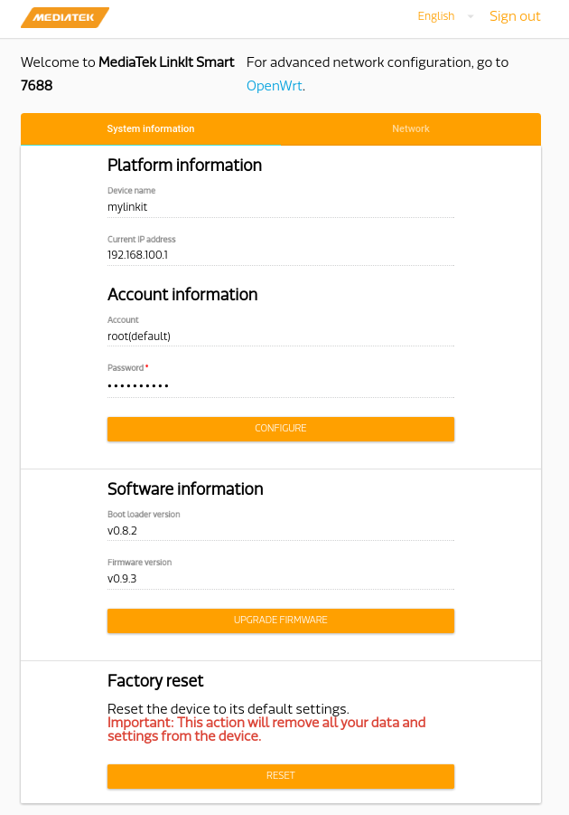
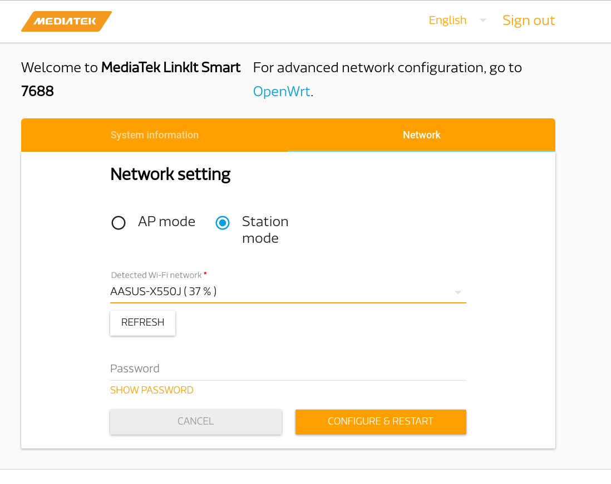

First Use
The LinkIt 7688 works in AP mode in default after power on. You can scan the SSID Linkit_Smart_7688_XXX by computer.
Connect to this WiFi and open 192.168.100.1 with the browser.
You will need to set a new password for log in 7688.
After login, you will see a Web UI to configure your 7688.

Configure network setting with Web UI
Click Network button on the upper right corner.
 The default mode is AP mode without password,
you can fill in the blank to set a wifi password.
The default mode is AP mode without password,
you can fill in the blank to set a wifi password.
And if you have a local wifi, you can switch to station mode and type in the SSID and password. 
Log in 7688
We use SSH to log in since it's the simplest way and wirelss. If you prefer log in 7688 with a cable, you may refer to the advanced setup instruction
For Windows users, it's recommended to use PuTTY. http://www.chiark.greenend.org.uk/~sgtatham/putty/download.html
For Mac OS X / Linux users, just launch terminal and type following command. Replace the IP_OF_7688 with the ip of your 7688.
ssh root@IP_OF_7688If the 7688 is in station mode and your computer has connect to it, then the default ip is 192.168.100.1